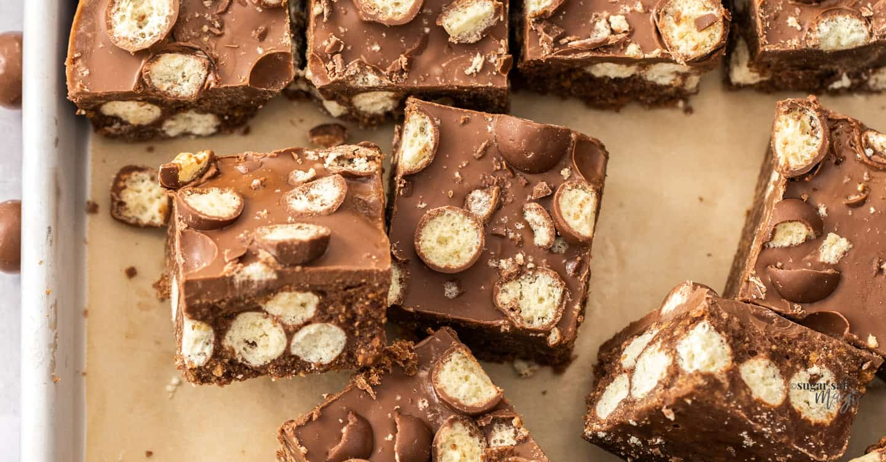

Malteser Traybake

Description
Malteser mixed with chocolate, crushed digestives, and more chocolate
Ingredients
- 100g butter
- 200g milk chocolate
- 3 tablespoons golde syrup
- 225g digestive biscuits
- 225g Maltesers
- 100g white chocolate
Method
- Melt together the butter, chocolate and syrup then add the crushed biscuits and the Maltesers
- Mix together quickly then pour into a lined tin and chill until set
- Drizzle with some melted white chocolate